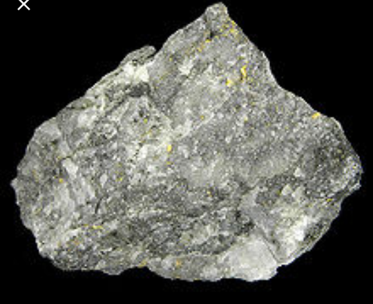
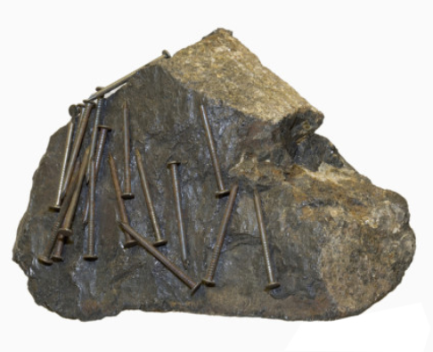

The Physical properties of minerals are used by Mineralogists to help determine the identity of a specimen. Some of the tests can be performed easily in the field, while others require laboratory equipment. For the beginning student of geology, there are a number of simple tests that can be used with a good degree of accuracy. The list of tests is in a suggested order, progressing from simple experimentation and observation to more complicated either in procedure or concept.
The following physical properties of minerals can be easily used to identify a mineral:
Most minerals have a distinctive color that can be used for identification. In opaque minerals, the color tends to be more consistent, so learning the colors associated with these minerals can be very helpful in identification. Translucent to transparent minerals have a much more varied degree of color due to the presence of trace minerals. Therefore, color alone is not reliable as a single identifying characteristic.
Streakis the color of the mineral in powdered form. Streak shows the true color of the mineral. In large solid form, trace minerals can change the color appearance of a mineral by reflecting the light in a certain way. Trace minerals have little influence on the reflection of the small powdery particles of the streak. The streak of metallic minerals tends to appear dark because the small particles of the streak absorb the light hitting them. Non-metallic particles tend to reflect most of the light so they appear lighter in color or almost white.
Cleavage is defined using two sets of criteria. The first set of criteria describes how easily the cleavage is obtained. Cleavage is considered perfect if it is easily obtained and the cleavage planes are easily distinguished. It is considered good if the cleavage is produced with some difficulty but has obvious cleavage planes. Finally it is considered imperfect if cleavage is obtained with difficulty and some of the planes are difficult to distinguish.
Luster is the property of minerals that indicates how much the surface of a mineral reflects light. The luster of a mineral is affected by the brilliance of the light used to observe the mineral surface. Luster of a mineral is described in the following terms: Metallic The mineral is opaque and reflects light as a metal would.Submettalic The mineral is opaque and dull. The mineral is dark colored.Nonmettalic The mineral does not reflect light like a metal.Nonmetallic minerals are described using modifiers that refer to commonly known qualities.Waxy The mineral looks like paraffin or wax.Vitreous The mineral looks like broken glass.Pearly The mineral appears iridescent, like a pearl.Silky The mineral looks fibrous, like silk.Greasy The mineral looks like oil on water.Resinous The mineral looks like hardened tree sap (resin).Adamantine The mineral looks brilliant, like a diamond.The second set of criteria is the direction of the cleavage surfaces. The names correspond to the shape formed by the cleavage surfaces: Cubic, rhombohedral, octahedral, dodecahedral, basal or prismatic.
Specific Gravityof a mineral is a comparison or ratio of the weight of the mineral to the weight of an equal amount of water. The weight of the equal amount of water is found by finding the difference between the weight of the mineral in air and the weight of the mineral in water. Knowing the properties of minerals will help you to identify minerals in the field.
| Hardness | Mineral | Simple test |
| 1 | Talc | easily scratched by fingernail |
| 2 | Gypsum | scrached by fingeranil |
| 3 | Calcite | just scrached by copper penny |
| 4 | Fluorite | easily scrached by teel blades |
| 5 | Apatite | scrached by steel blade |
| 6 | Feldspar | not scrached by steel blades,can just scratch glass |
| 7 | Quartz | can easily scrach glass and steel blade |
| 8 | Topaz | scraches quartz |
| 9 | Corandum | scraches topaz |
| 10 | Diamond | cannot be scrached by any other mineral |
| Property | |
| Some mineral give off a gas when acid is dropped on them.(ex:dolomite,calcite) |  |
| Can produce double image when an object is viewed through it.{ex:iceland spar(a form of calcite)} | |
| Some act as a magnet.(ex:magnetite) |  |